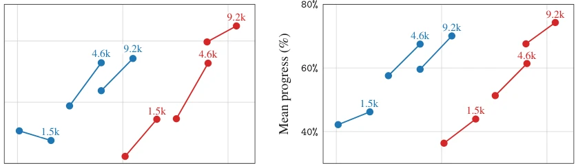
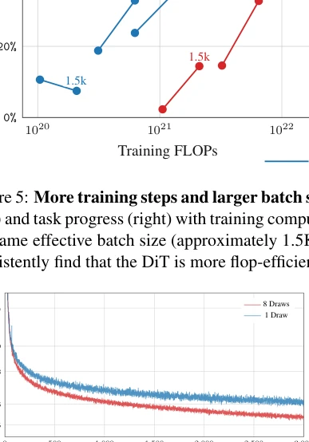
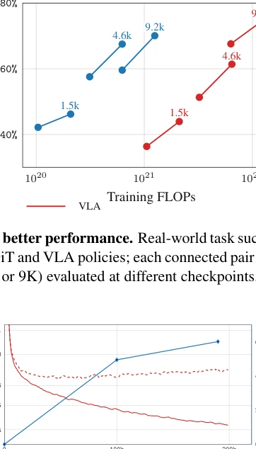
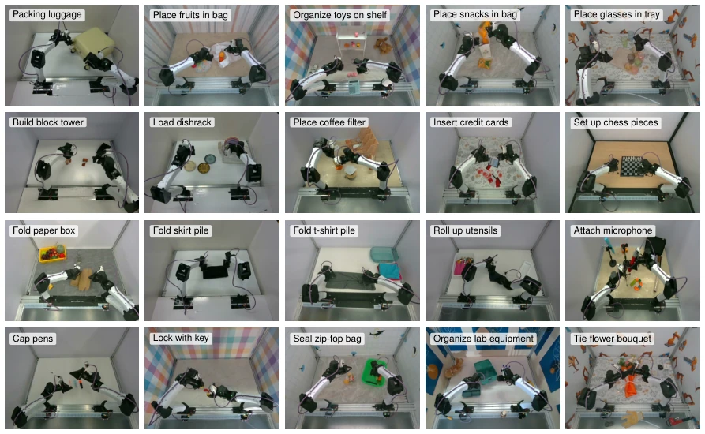
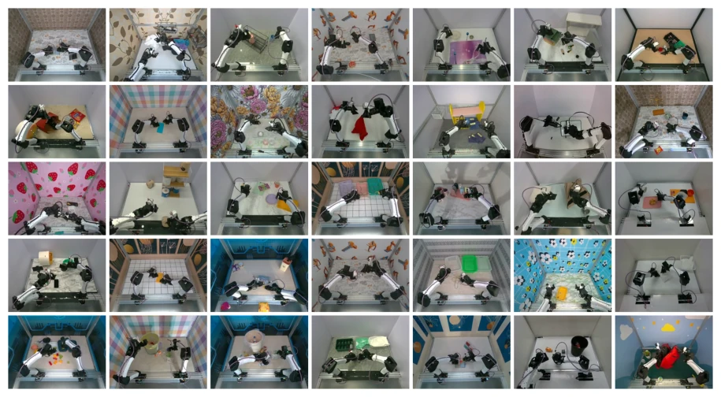
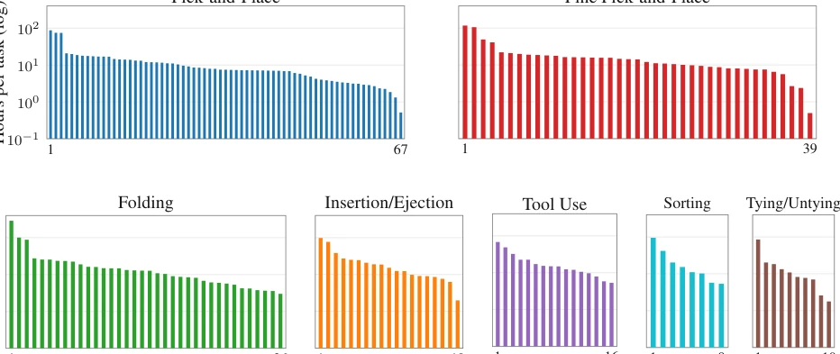
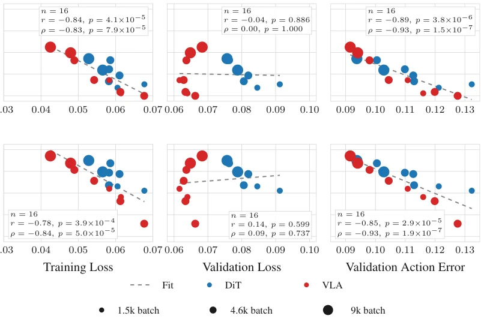
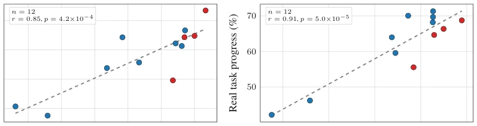
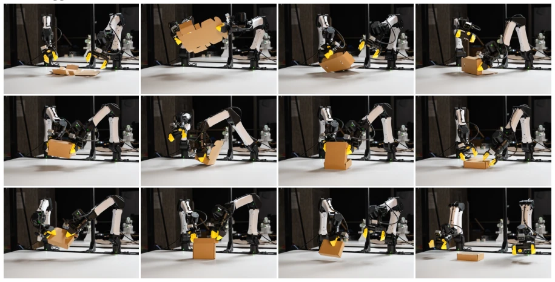
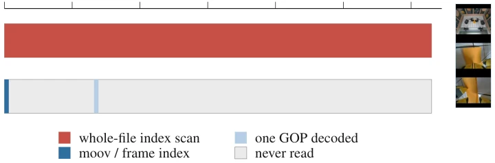

This paper attempts to build an open-source full-stack for "behavior cloning", with considerable ambition. The ABC-130K dataset is indeed large, with 3500 hours of data considered generous in the open-source community, but the core issue remains "where does the data come from" — entirely relying on teleoperation, costs have not truly decreased. Comparison experiments between DiT and VLA reveal the trade-off between compute efficiency and performance; VLA performs better under large batch sizes, but DiT saves more VRAM. The strong correlation from simulation to reality is a highlight, but MuJoCo's low-fidelity rendering remains a fatal flaw. Overall, this is a good benchmark, but "open-source" does not equal "cheap"; the bottleneck of teleoperation collection still exists. However, the authors compare the $8000 YAM robot with the $30000 AgiBot, indeed attempting to level the playing field, allowing the community to reproduce equally.
Robot manipulation learning progresses slowly, mainly due to the lack of large-scale, high-quality open-source data and reproducible training stacks. Existing datasets such as DROID [4] and BridgeData-V2 [6] mostly focus on single-arm simple tasks; Open X-Embodiment [5] is large in scale but quality varies. AgiBot-World [7] has 3000 hours of data, but relies on expensive hardware. Behavior Cloning (BC) lacks convergent training recipes, and evaluation costs are high. This paper aims to solve these pain points, providing a complete open-source stack including data, training, and evaluation, lowering community barriers, and promoting research on dexterous manipulation.

Figure 5: More training steps and larger batch size give better performance. Real-world task success (left) and task progress (right) with training compute for DiT and VLA policies; each connected pair uses the same effective batch size (approximately 1.5K, 4.6K, or 9K) evaluated at different checkpoints. We consistently find that the DiT is more flop-efficient.

Figure 6: Eight diffusion draws reduce VLA train loss at fixed accelerator time. Training loss versus GPU-hours for one- and eight-draw VLA diffusion training.
The overall process is divided into four parts: data, model, simulation, and evaluation. ABC-130K includes bimanual teleoperation data for 195 task categories, totaling 3500 hours. In terms of models, ABC-DiT and ABC-VLA are proposed. DiT uses a DINOv3 encoder combined with Cross-Attention to retain spatial information, outperforming CLIP+AdaLN, with model parameters of 2B. VLA is based on Gemma 3, comparing Cross Attention, FAST, and AdaLN connectors, finding that AdaLN combined with diffusion gradient unfolding yields the best results; although the VLM is large, training costs are reduced through gradient unfolding. Training introduces variance reduction techniques (8 diffusion sampling steps) to reduce VLA training costs, with 200k steps of training. The simulation part, ABC-Sim, provides MuJoCo environments and VR teleoperation data for Sim-to-Real verification. Finally, for complex tasks (such as folding boxes), DAgger is used to collect intervention data to enhance policy robustness, optimized through an 80:10:10 data mixing ratio.
Trained on ABC-130K, evaluation metrics include Strict Success and Progress. Results show that DiT is superior in computational efficiency, while VLA performance leaps at 9216 batch size. Offline metrics (training loss, validation action error) show a strong negative correlation with real-world performance and can serve as quick screening proxies. Simulation evaluation correlates with real performance up to r=0.91, proving simulation can serve as a low-cost debugging tool. After DAgger intervention, the success rate of the box folding task significantly improved. Pretrained models perform better than training from scratch in fine-tuning downstream fine-grained tasks, verifying the value of large-scale pretraining.

Figure 7: VLA progress and offline metrics over time. VLA training and validation loss with real- world progress across checkpoints.

Figure 16: Representative top-camera frames for each task category. Pick-and-Place (row 1, all 5): Packing luggage, Place fruits in bag, Organize toys on shelf, Place snacks in bag, Place glasses in tray. Fine Pick-and-Place (row 2, all 5): Build block tower, Load dishrack, Place coffee filter, Insert credit cards, Set up chess pieces. Folding (row 3, cells 1–4): Fold paper box, Fold skirt pile, Fold t-shirt pile, Roll up utensils. Insertion/Ejection (row 3 cell 5, row 4 cell 1): Attach microphone, Cap pens. Tool Use (row 4, cells 2–3): Lock with key, Seal zip-top bag. Sorting (row 4 cell 4): Organize lab equipment. Tying/Untying (row 4 cell 5): Tie flower bouquet.
其他图片Other Figures

Figure 3: Dataset overview. Random top camera frame samples from ABC-130K. We recommend zooming in to see the diverse tasks, backgrounds, and objects present in the data.

Figure 4: Per-task hours by primitive category. Hours-per-task on a log scale in descending order within each category. Top row: Pick-and-Place and Fine Pick-and-Place (the two largest categories in terms of number of tasks). Bottom row: the five remaining categories. Descriptions of each task category along with example images from the data can be found in Appendix A.

Figure 8: Offline metrics versus real-world policy performance. We analyze correlation between checkpoint training diagnostics and real-world success. Training loss and validation action error are both negatively correlated with real-world performance. Each point is one checkpoint, with real-world success averaged across the three evaluation tasks.

Figure 9: Sim-to-real performance correlation. Task-level simulation progress correlation with real-world progress across DiT and VLA checkpoints.

Figure 15: The robot autonomously folds a cardboard box and closes the lid. DAgger intervention data is crucial for achieving good performance on this long-horizon, precise manipulation task.

Figure 17: Efficient frame access for fast data loading. Encoding keyframes more frequently and in a manner that allows for an analytically reconstructed frame index makes random frame access nearly free. To read one frame from a video, torchcodec’s default scans the entire file to build its frame index (top). Correctly encoding the file allows us to compute the index analytically, meaning we only need to read the file header plus frames since the closest keyframe, leaving the rest of the file untouched, reducing disk pressure. The decoded frame is three vertically stacked camera views.